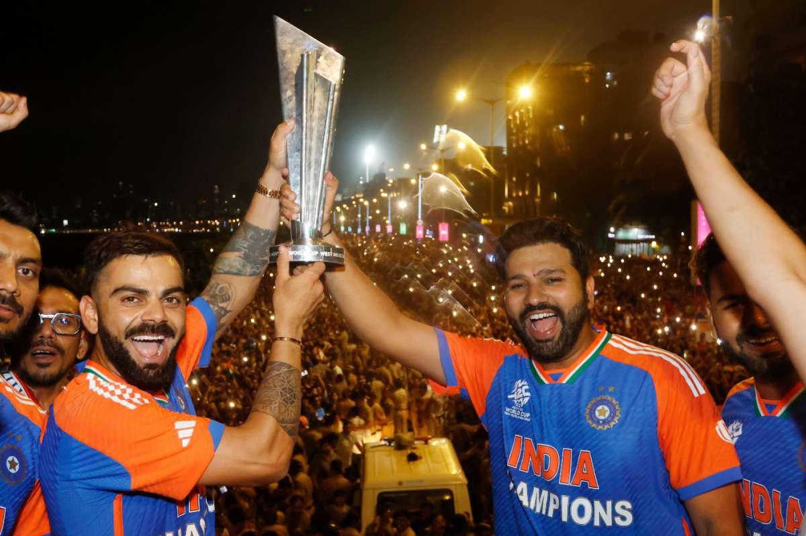

Welcome Cricket Fans!
Test your cricket knowledge with our fun and challenging quiz. Perfect for both casual fans and cricket experts!
Start Quiz NowLearn more about cricket on Wikipedia
Recent Cricket Champions
Australia won the 2023 ODI World Cup in India, defeating the host nation in the final.
India won the 2024 T20 World Cup, ending their 11-year ICC trophy drought in dramatic fashion.
New Zealand won the inaugural World Test Championship in 2021 against India.
What is Cricket
Video courtesy of ICC YouTube Channel
India's T20 World Cup 2024 Victory
India's thrilling victory in the 2024 T20 World Cup sparked nationwide celebrations. The victory parade in Mumbai was one of the biggest cricket celebrations in history, with fans flooding the streets to honor their champions!
T20 World Cup Final Match Recap
Victory Celebrations Fan Edit
Top 7 Cricketers in the World
| Rank | Player | Achievements | Wikipedia |
|---|---|---|---|
| 1 | Ricky Ponting | 2x World Cup winning captain | Link |
| 2 | Sachin Tendulkar | 100 international centuries | Link |
| 3 | Virat Kohli | Fastest to 8,000, 9,000, 10,000, 11,000 and 12,000 ODI runs and won all ICC tournament and most followed cricketer with 271 millions | Link |
| 4 | Jasprit Bumrah | ICC ODI Player of the Year 2022 | Link |
| 5 | Viv Richards | 2x World Cup winner, 8,540 Test runs | Link |
| 6 | Steve Smith | ICC Cricketer of the Year 2015, 2017 | Link |
| 7 | MS Dhoni | 2011 World Cup winning captain | Link |